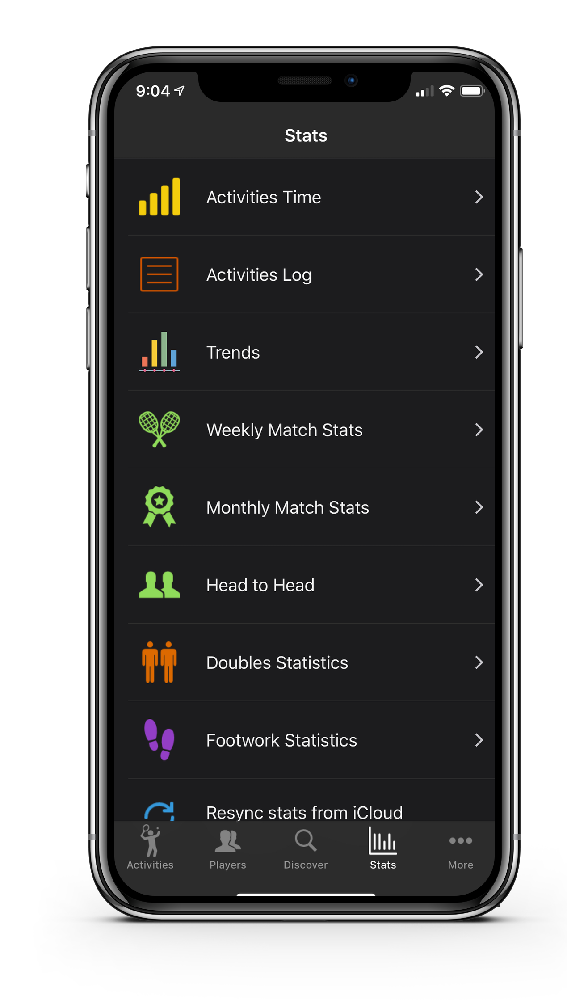

Your Match Stats
TennisKeeper uses the data you entered to compute your stats. The following stats are available:
- Daily time spent and calorie count on your racquet sports activities.
- Total and average time spent and calorie burned on your actvities by week, month or year.
- Win, loss, tie match stats by week, month or year.
- Win, loss, tie match stats grouped by games, sets, matches.
- Lifetime singles and doubles Head to Head match statistics against any opponents.
- Win, loss, tie match stats with all your Doubles partners.
- Footwork stats (e.g. Steps count, distance covered) comparisons between sessions.
- Heart rate graph for each session.
- Swing shots count, speed and detail analysis.
- Advanced analytics for best surfaces, opponents style, string tension etc.
- Trends data.
To view your stats:
- Go to TennisKeeper > Stats.
- Tap any of the item.

If you want to refresh your stats, tap Stats > Resync stats from iCloud.
TennisKeeper will retrieve your latest data from iCloud and recalculate your stats.
This operation may take a few seconds.